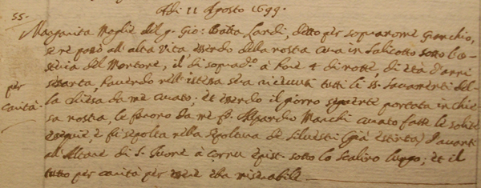

|
(Granchio) Figlio di Domenico Landi, nacque intorno al 1640 a S.Giovanni a Cerreto (SI) Morto a Siena fra il 1684 e il 1697 
Secondo l'Anonimo, il Bandiera e il Gagliardi avrebbe vinto anche il Palio di luglio 1684 nella Torre e quello di settembre del 1685 nella Selva.
Infine, secondo il Bandini avrebbe vinto anche il Palio di luglio del 1686 nella Giraffa. Gli sono state attribuite tre vittorie conseguite in occasione di Palii corsi nella Villa di Cetinale: il 21 settembre 1679 nella Chiocciola, il 27 settembre 1680 nel Bruco e il 23 settembre 1691 nel Nicchio. 
Nell'immagine si legge che nel 1665 aveva 25 anni e che da 22 viveva a Siena in S.Martino

È stata la seconda moglie ad aiutarci a risalire alla sua vera identità.
Nel libro dei defunti di S.Martino, viene infatti riportato, accanto al nome Margherita, che morì l'11 agosto 1699, pure il soprannome del marito Giovan Battista Landi. Ad avvalorare l'ipotesi che il Landi sia stato il fantino Granchio, sono state pure le sue prime nozze con Agata Rossi il 29 ottobre 1665, giusto pochi mesi dopo aver vinto il Palio nella Torre (territorio nel quale viveva), approfittando evidentemente di una maggiore disponibiltà economica. 
Negli stati delle Anime di S. Martino si legge che faceva il ciabattino e che viveva accanto all'Osteria del Montone. |